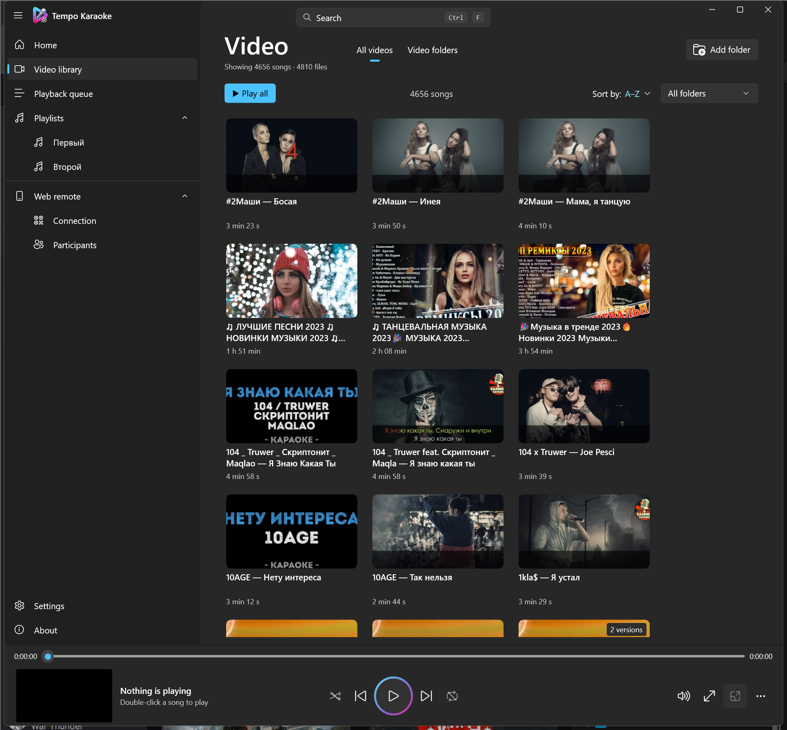
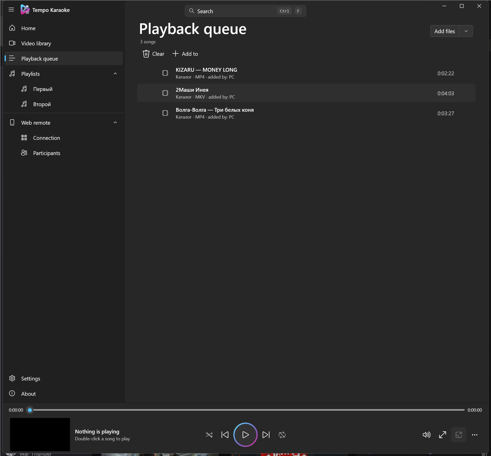
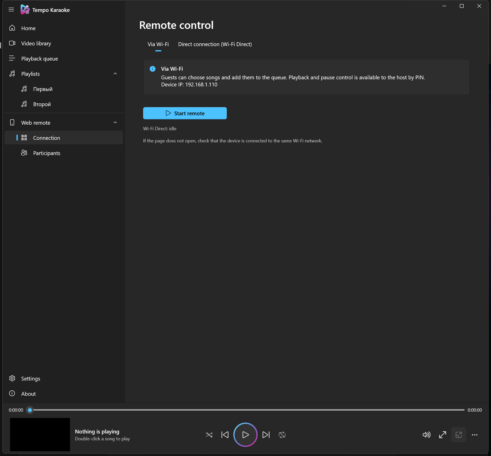

Local library, zero waiting
Index any number of video folders recursively. A SQLite cache keyed on size and modification time, plus background metadata and thumbnail workers, make repeat launches instant — even with thousands of songs.
Tempo Karaoke turns any folder of karaoke videos into a fast, beautiful catalog. Guests search and queue songs from their phones while the video plays on the big screen.
This is the actual remote page from the app, running with a demo library. Search, queue and press play.
Four views from the Windows app: the library, the queue, the phone remote and the settings that connect them.




Large local collections, remote requests and long evenings — without folders, spreadsheets or cloud accounts.
Index any number of video folders recursively. A SQLite cache keyed on size and modification time, plus background metadata and thumbnail workers, make repeat launches instant — even with thousands of songs.
Fuzzy matching, RU/EN transliteration and automatic keyboard-layout correction. Results appear before the next frame, ranked by relevance and grouped by song versions.
Play next, drag-and-drop order, undo, M3U import/export and a queue that survives restarts.
Detach the video to a TV or projector and keep the control panel on the laptop.
Seek, speed, 10-band equalizer, shuffle, repeat and a countdown between songs.
Automatic GitHub release checks, a native toast, an update badge and a silent installer that keeps settings, queue, playlists and cache. Confirmation before anything installs.
No media uploads and no account. PINs are stored as salted PBKDF2 hashes, diagnostics mask private paths and the media library is never modified.
Start the built-in web server, show the QR code and let guests browse the catalog from any modern browser. You keep control of playback, volume and the queue.
No app download — works in iOS and Android browsers over Wi-Fi or Wi-Fi Direct.
Guests search, request songs and watch their exact position in the live queue.
The host prioritizes requests, skips tracks and controls playback with a PIN.
The latest installer is published on GitHub Releases. No VLC install, no media conversion and no account.